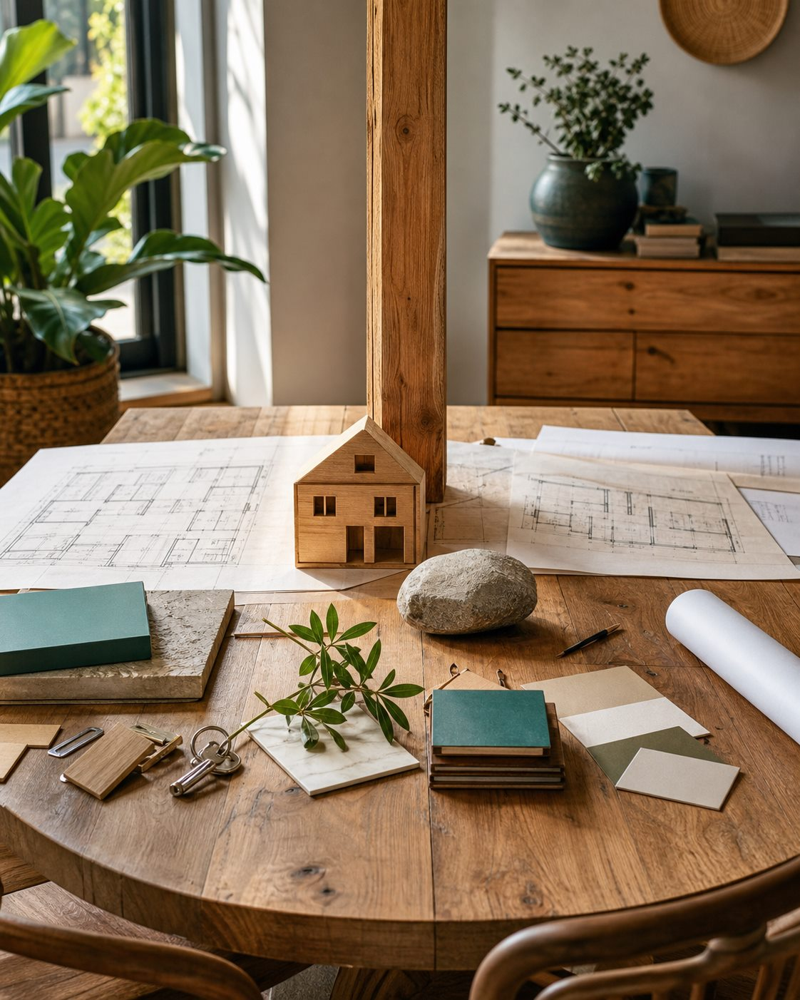
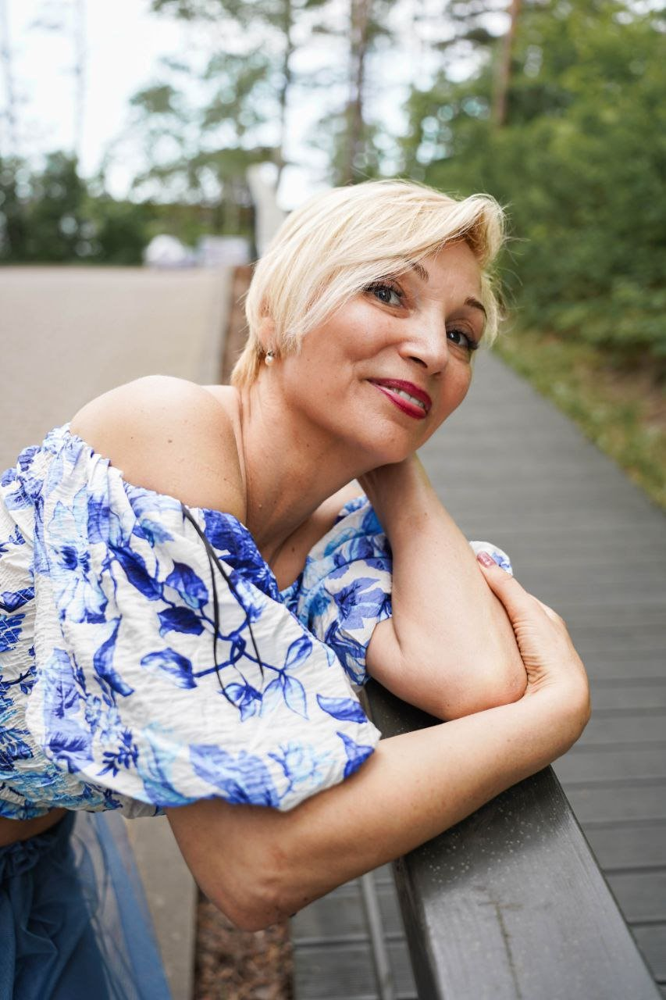

Evolution House — Дом Эволюции
Школа для тех, кто проходит важный жизненный переход и хочет пройти его осознанно
Как жить дальше, если прежний способ уже не работает?

В Evolution House приходят с разными темами
Школа помогает увидеть этот переход, восстановить внутреннюю опору и выбрать следующий точный шаг.
Что такое Evolution House в действии
Это пространство, где методы, практики, обучение и сопровождение соединены одной логикой: помочь человеку пройти важный переход бережно и практически.
Увидеть переход
Понять, что именно завершилось и какая внутренняя опора сейчас нужна.
Выбрать форму работы
Найти подходящий путь: практику, обучение, менторинг, ретрит или сопровождение.
Прожить изменение
Перевести понимание в тело, выбор, действие и новый способ жить.
Почему появился Evolution House
Evolution House складывался больше двадцати лет: через практику, обучение, сопровождение людей и внимательное исследование того, как человек проходит важные внутренние изменения.
Сначала это была личная практика и обучение.
Затем появились авторские методы, ретриты, менторинг, Рейки, архетипы и телесные практики.
Со временем стало ясно: людям нужна целостная система перехода, где практика, метод и сопровождение связаны между собой.
Личный путь Светланы, включая опыт пожара, стал точкой кристаллизации: накопленное за годы оформилось в Дом Эволюции.

Факты о школе
Evolution House развивается как единая образовательная система, где каждый формат является частью большого пути.

Мини-карта школы
В основе школы лежат четыре опоры
Так проще увидеть, из чего собирается маршрут внутри Evolution House.
Школа построена вокруг методов Светланы Страусс и общей логики перехода: от понимания себя к изменению состояния, выбора и жизни.
В школе есть Мастера, наставники и консультанты выбора пути, которые помогают человеку не потеряться между форматами.
Человек может входить через разные темы: отношения, тело, реализацию, усталость, тревогу, энергию. Путь собирается под его состояние и задачу.
Недели, менторинги, ретриты, практики и личная работа существуют как разные уровни одного образовательного пространства.
Манифест Evolution House
Мы видим человека целым: с опытом, силой, защитами, телом и внутренним потенциалом.
Школа помогает пройти переход так, чтобы человек сохранил достоинство, темп и связь с собой.
Честность
Развитие начинается там, где человек признаёт: прежний этап завершился.
Проживание
Переход становится настоящим, когда понимание входит в тело, выбор и ежедневные решения.
Бережная глубина
Глубокая работа держится на ясности, уважении к границам и устойчивом контакте с человеком.
Точный шаг
Важен следующий шаг именно для этого человека: с учётом его состояния, темпа и реальной жизни.

Светлана Купаева-Страусс
26 лет практики. Авторский метод. Живая школа.
- 26 лет индивидуальной работыс людьми в точках жизненных переходов: отношения, семья, тело, реализация, поиск нового пути.
- Создатель Evolution Houseшколы и пространства, где разные методы собираются в персональный маршрут человека.
- Автор метода «Персональный Код Архетипов»который помогает видеть повторяющиеся сценарии, внутренние силы и направления развития.
- Автор книги «Малыш зовёт: родите ли?»о пути к материнству, когда обстоятельства кажутся сильнее желания.
- Создатель программ, менторингов и ретритовв которых человек проходит путь от понимания себя к изменениям в реальной жизни.
- Сформировала команду Мастеров Evolution Houseсопровождающих участников в разных точках их пути.
- Мастер Рейки и преподавательсоздавшая последовательный путь обучения — от первой ступени до подготовки Мастеров.
Чем Evolution House отличается
Evolution House соединяет глубину, тело, практику, маршрут и сопровождение в единую систему перехода.
Помогает увидеть внутренний сценарий, который влияет на отношения, тело, выбор и способ действовать.
Переводит понимание в состояние: через тело, движение, дыхание, энергию и ощущение опоры.
Даёт карту внутренних сил, конфликтов и ролей, через которые человек точнее понимает себя и следующий шаг.
Помогает снижать силу прошлого опыта, травм и автоматических реакций, которые продолжают управлять настоящим.
Помогают выбрать точный вход, глубину и темп движения, чтобы человек не оставался один на один с большим количеством программ.
Для кого создан Evolution House
Когда Evolution House будет полезен
Если прежний способ жить завершился, а внутри уже созревает запрос на новую опору.
Если понимание себя хочется перевести в ежедневный выбор, отношения, тело, дело и конкретные действия.
Если важен маршрут с практикой, сопровождением и уважением к вашему темпу.
Когда сейчас нужен другой путь
Если хочется мгновенного результата без личного участия.
Если хочется передать ответственность за свою жизнь другому человеку.
Голоса участников
Что видно в отзыве: границы, внутренняя ось и ясность
«На следующий день я трижды сказала "нет" в ситуациях, в которых неделей раньше не смогла бы отказать. И почувствовала ось. Ещё не баланс, но то самое давно забытое ощущение внутренней выстроенности.»
Что видно в отзыве: тело, состояние и возвращение энергии
«У меня сильно изменилось состояние — эмоционально и на уровне тела.»
Что видно в отзыве: команда, синергия и доверие
Команду можно сравнить с симфоническим оркестром: роль каждого бесценна, а общая синергичная игра создаёт неповторимое творение.
Что видно в отзыве: атмосфера пространства
В этом пространстве есть открытость, искренность и любовь. Каждый участник команды действует вдохновляюще — вперёд и вверх.
Что видно в отзыве: стиль ведения Светланы
Светлана чувствует, что происходит с человеком, и не дёргает процесс. Это не создаёт давления, даёт внутреннюю свободу и помогает спокойно дойти до конца.
Что видно в отзыве: поддержка и принятие
Я прошла большой путь рядом с вами. Вы поддерживали, вдохновляли, согревали, иногда несли. Я впервые почувствовала такое принятие и поддержку.
Оригинальные фрагменты отзывов ниже оставлены как подтверждение живого источника. Основной смысл уже вынесен в карточки выше.
Люди, которые ведут путь
В Evolution House есть авторы направлений, Мастера и наставники. У каждого своя роль, но все они помогают человеку не остаться одному в важном процессе.
Нажмите на фотографию человека, чтобы увидеть, как он ведёт и где вы встретитесь с ним в школе.
Авторы направлений
Люди, вокруг которых построены самостоятельные пути школы.
Автор направления
СветланаСтраусс
Основательница Evolution House · автор и ведущая направлений Архетипов и Рейки
Светлана создаёт пространство школы и участвует в ключевых направлениях Evolution House: Архетипах, Рейки, менторинге, ретритах и живых форматах школы.
Ко мне приходят, когда...
Когда прежняя роль, отношения, способ жить или опираться на себя уже завершили свой этап, а новый путь пока только проступает.
Как я веду
Светлана помогает увидеть, где человек уже перерос прежнюю форму жизни, и бережно собрать следующую версию себя и своей жизни.
Опыт и подготовка
- ведёт практики и обучение с 2000 года
- основательница Evolution House
- автор метода Персонального Кода Архетипов
- Мастер-Учитель Рейки
- ведёт менторинг, ретриты и ключевые форматы школы
Где вы встретитесь в школе

Автор направления
УгисСтраусс
Автор метода Off-Switch · ведущий Пути свободы от травм
Угис ведёт Путь свободы от травм, личную работу с Угисом и участвует в ретритах Evolution House.
Метод вырос из многолетней прикладной работы с людьми, командами и руководителями в условиях давления, ответственности, неопределённости и эмоциональной нагрузки.
Ко мне приходят, когда...
Когда человек всё понимает, а в важный момент снова тревожится, контролирует, избегает, замирает, срывается или откладывает.
Как я веду
Угис ведёт процесс к месту, где реакция запускается автоматически, и помогает вернуть возможность выбирать иначе в реальном моменте.
Опыт и подготовка
- 28+ лет прикладной работы с людьми и организациями под давлением
- 15+ лет индивидуальной работы
- сотни индивидуальных клиентов
- автор метода Off-Switch
Где вы встретитесь в школе
Мастера и наставники
Люди, которых участник встречает внутри программ, практик и выбора первого шага.

Мастер и наставник
ТатьянаИванова
Мастер-Учитель Рейки · наставник программ Evolution House
Татьяна ведёт Рейки I и участвует в менторинговых процессах школы. Её профиль — спокойный контакт, поддержка и сопровождение человека в сложном внутреннем материале.
Ко мне приходят, когда...
Когда человек слишком многое держит в голове, чувствует беспомощность, страх, сопротивление, непонимание или хаос. Когда важно не спорить с собой, а мягко увидеть, что происходит внутри.
Как я веду
Татьяна создаёт атмосферу, где можно расслабиться и открыться. В её работе важны голос, юмор, спокойный контакт и присутствие рядом, пока поднимается сложный материал. Она помогает встретиться с собой, договориться с собой и обрести опору для следующего шага.
Опыт и подготовка
- 5 лет в поддержке и групповом обучении
- 3 года индивидуальной работы
- 500+ сессий
- изучает соматопсихологию и психокатализ
- магистратура Московского международного университета
- Мастер-Учитель Рейки
Где вы встретитесь в школе

Мастер и наставник
ЛюдмилаЗимен
Мастер Рейки, ведущая Рейки I и II, наставник индивидуального сопровождения
Людмила ведёт Рейки I и Рейки II, участвует в менторинговых процессах школы и работает с индивидуальным сопровождением. Её зона — стабильность, мягкость и закрепление изменений в реальной жизни.
Ко мне приходят, когда...
Когда человеку нужен устойчивый проводник в глубоком процессе: поддержка состояния, ясности и энергии в бережном темпе. Когда важно закреплять изменения в конкретной жизни.
Как я веду
Людмила внимательно чувствует состояние и ритм процесса. Она замечает то, что иногда появляется раньше слов, помогает не спешить и закреплять изменения спокойно, шаг за шагом, в конкретной жизни.
Опыт и подготовка
- путь Рейки от первой ступени до Мастера-Учителя
- продолжает глубокое мастерское обучение
- обучение по темам рода и сепарации
- 9-месячный Mastermind
- участие в ретритах Evolution House
- личный опыт практик для тела и эмоционального состояния
Где вы встретитесь в школе

Мастер, коуч и консультант выбора пути
ЕвгенияТатаркина
Мастер, коуч и консультант выбора пути Evolution House
Евгения помогает человеку пройти первый ориентир внутри Evolution House: увидеть ситуацию с разных сторон, услышать себя, сопоставить запрос с направлениями школы и выбрать ближайший шаг без давления и спешки.
Профессиональная опора Евгении — коучинг, стратегические сессии, опыт индивидуальной и групповой работы, телесные и творческие практики. Она помогает человеку сориентироваться в выборе и пройти вход в школу спокойно, ясно и по-человечески.
Ко мне приходят, когда...
Когда внутри много мыслей, вариантов и откликов, но пока неясно, с чего начать. Когда хочется собрать воедино хаотичное восприятие ситуации, понять свои ресурсы, темп и возможную траекторию развития.
Как я веду
Евгения ведёт разговор как живую стратегическую навигацию. Она помогает отделить срочное от главного, увидеть лучшие варианты действий и выбрать не абстрактно правильный, а действительно подходящий следующий шаг.
Опыт и подготовка
- профессиональный коуч, сертификат ICF, Балтийский центр коучинга
- Мастер Рейки, инициация у Светланы Страусс
- высшее бизнес-образование
- обучение по танцетерапии как дополнительной программе
- опыт индивидуальной работы, групп, ретритов, телесных и творческих практик
- специалист в ароматерапии: аромадиагностика и терапевтическое сопровождение эфирными маслами
Где вы встретитесь в школе
Наша этика
В Evolution House этика помогает держать пространство ясно, бережно и без давления.
Честность и ясные границы
Мы заранее обозначаем формат, границы и роль Мастера. Если человеку нужна медицинская, психотерапевтическая или психиатрическая помощь, мы относимся к этому уважительно.
Свобода вместо зависимости
Сопровождение строится так, чтобы человек лучше слышал себя, принимал свои решения и постепенно опирался на себя.
Бережный темп
Мы учитываем состояние, готовность и право человека замедлиться, остановиться или выбрать другой формат.
Уважение к границам и телу
В работе есть место чувствам, телу и честному взгляду на себя без давления через страх, вину или драматизацию боли.
Бережность для нас — ясность, точность и уважение к живому темпу человека.
Следующий шаг может быть небольшим. Но он должен быть точным.
Если вы чувствуете, что сейчас находитесь в важном переходе
Не обязательно сразу видеть весь путь. Достаточно честно увидеть, где вы сейчас, и выбрать ближайший шаг в подходящем темпе.